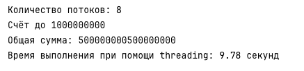
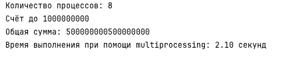
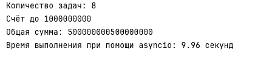
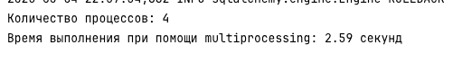

Лабораторная работа 2. Потоки. Процессы. Асинхронность.
Ход работы
Задание 1
threading
Файл threading_solution.py
import threading
import time
def calculate_sum(start, end, result, index):
result[index] = sum(range(start, end))
target = 1000000000
num_threads = 8
chunk_size = target // num_threads
threads = []
results = [0] * num_threads
start_time = time.time()
for i in range(num_threads):
start = i * chunk_size + 1
end = (i + 1) * chunk_size + 1
thread = threading.Thread(target=calculate_sum, args=(start, end, results, i))
threads.append(thread)
thread.start()
for thread in threads:
thread.join()
total_sum = sum(results)
print(f"Количество потоков: {num_threads}")
print(f"Счёт до {target}")
print(f"Общая сумма: {total_sum}")
print(f"Время выполнения при помощи threading: {time.time() - start_time:.2f} секунд")
Результаты выполнения:

multiprocessing
Файл multiprocess_solution.py
import multiprocessing
import time
def calculate_sum(start_end):
start, end = start_end
return sum(range(start, end))
def main():
target = 1000000000
num_processes = 8
chunk_size = target // num_processes
ranges = [(i * chunk_size + 1, (i + 1) * chunk_size + 1) for i in range(num_processes)]
start_time = time.time()
with multiprocessing.Pool(processes=num_processes) as pool:
results = pool.map(calculate_sum, ranges)
total_sum = sum(results)
print(f"Количество процессов: {num_processes}")
print(f"Счёт до {target}")
print(f"Общая сумма: {total_sum}")
print(f"Время выполнения при помощи multiprocessing: {time.time() - start_time:.2f} секунд")
if __name__ == "__main__":
multiprocessing.set_start_method('spawn')
main()
Результаты выполнения:

asyncio
Файл async_solution.py
import asyncio
import time
async def calculate_sum(start, end):
return sum(range(start, end))
async def main():
target = 1000000000
num_tasks = 8
chunk_size = target // num_tasks
tasks = []
for i in range(num_tasks):
start = i * chunk_size + 1
end = (i + 1) * chunk_size + 1
tasks.append(calculate_sum(start, end))
start_time = time.time()
results = await asyncio.gather(*tasks)
total_sum = sum(results)
print(f"Количество задач: {num_tasks}")
print(f"Счёт до {target}")
print(f"Общая сумма: {total_sum}")
print(f"Время выполнения при помощи asyncio: {time.time() - start_time:.2f} секунд")
if __name__ == "__main__":
asyncio.run(main())
Результаты выполнения:

Итоговые результаты
| Подход | Количество потоков/процессов/задач | Время выполнения |
|---|---|---|
| Threading | 8 потоков | 9.78 секунд |
| Multiprocessing | 8 процессов | 2.10 секунд |
| Asyncio | 8 задач | 9.96 секунд |
Выводы
- Для CPU-bound задач Python рекомендуется использовать multiprocessing для реального ускорения за счёт параллельной работы на нескольких ядрах процессора.
- Threading и asyncio не дают прироста в чистых вычислениях из-за ограничений GIL и асинхронной природы работы соответственно.
Задание 2
Одним из требований задания был парсинг страниц для заполнения базы данных из ЛР1. Вариантом прошлой работы было создание сервиса для учёта задач. Для примера был взят сайт https://www.lifehacker.ru/, на котором хранятся различные статьи по менеджменту. Было взято 15 ссылок для парсинга.
threading
Файл threading_parser.py
import threading
import time
import requests
from finances_lab2.task2.common.parser import process_page
from finances_lab2.task2.urls import urls
def parse_and_save(url_list):
for url in url_list:
response = requests.get(url, timeout=10)
response.raise_for_status()
process_page(response.text)
def main():
num_threads = 4
start_time = time.time()
chunk_size = (len(urls) + num_threads - 1) // num_threads
chunks = [urls[i:i + chunk_size] for i in range(0, len(urls), chunk_size)]
threads = []
for chunk in chunks:
thread = threading.Thread(target=parse_and_save, args=(chunk,))
threads.append(thread)
thread.start()
for thread in threads:
thread.join()
print(f"Количество потоков: {num_threads}")
print(f"Время выполнения при помощи threading: {time.time() - start_time:.2f} секунд")
if __name__ == "__main__":
main()
Результаты выполнения:
multiprocessing
Файл multiprocessing_parser
import multiprocessing
import time
import requests
from finances_lab2.task2.common.parser import process_page
from finances_lab2.task2.urls import urls
def parse_and_save(url_list):
for url in url_list:
response = requests.get(url, timeout=10)
response.raise_for_status()
process_page(response.text)
def main():
start_time = time.time()
num_processes = 4
chunk_size = (len(urls) + num_processes - 1) // num_processes
chunks = [urls[i:i + chunk_size] for i in range(0, len(urls), chunk_size)]
processes = []
for chunk in chunks:
process = multiprocessing.Process(target=parse_and_save, args=(chunk,))
processes.append(process)
process.start()
for process in processes:
process.join()
print(f"Количество процессов: {num_processes}")
print(f"Время выполнения при помощи multiprocessing: {time.time() - start_time:.2f} секунд")
if __name__ == "__main__":
main()
Результаты выполнения:

asyncio + aiohttp
Файл async_parser.py
import asyncio
import time
import aiohttp
from tflab_2.task2.common.parser import process_page
from tflab_2.task2.urls import urls
async def fetch(session, url):
async with session.get(url, timeout=10, ssl=False) as response:
text = await response.text()
return url, text
async def parse_and_save(url):
async with aiohttp.ClientSession() as session:
url, html = await fetch(session, url)
if html:
process_page(html)
async def parse_chunk(chunk):
tasks = [parse_and_save(url) for url in chunk]
await asyncio.gather(*tasks)
async def main():
num_chunks = 5
start_time = time.time()
chunk_size = (len(urls) + num_chunks - 1) // num_chunks
chunks = [urls[i:i + chunk_size] for i in range(0, len(urls), chunk_size)]
chunk_tasks = [parse_chunk(chunk) for chunk in chunks]
await asyncio.gather(*chunk_tasks)
print(f"Количество задач: {len(urls)}")
print(f"Время выполнения при помощи asyncio + aiohttp: {time.time() - start_time:.2f} секунд")
if __name__ == "__main__":
asyncio.run(main())
Результаты выполнения:
Итоговые результаты
| Подход | Количество потоков/процессов/задач | Время выполнения |
|---|---|---|
| Threading | 4 потока | 1.94 секунд |
| Multiprocessing | 4 процесса | 2.59 секунд |
| Asyncio | 4 задачи | 0.86 секунд |
Выводы
- Для небольшого количества сетевых запросов допустимо использовать threading.
- При большом количестве запросов оптимальным становится asyncio благодаря минимальной нагрузке на ресурсы.
- Multiprocessing не подходит для лёгких сетевых задач, так как создание процессов вносит дополнительные накладные расходы.